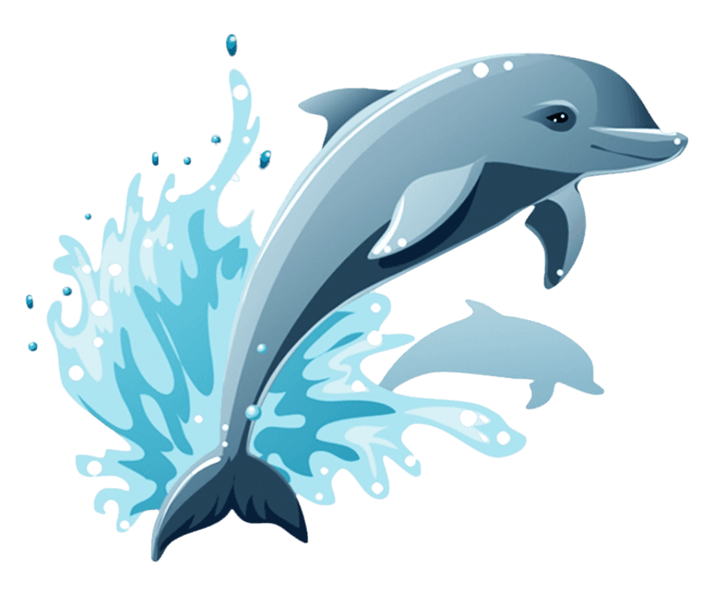
Dolphin Facts
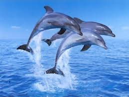
Dolphins are highly intelligent marine mammals and are part
of the family of toothed whales that includes orcas and pilot whales.
They are found worldwide, mostly in shallow seas of the
continental shelves,and are carnivores, mostly eating fish and
squid. Dolphin coloration varies, but they are generally gray in color
with darker backs than the rest of their bodies.
Click here
to read more about dolphins
Diet
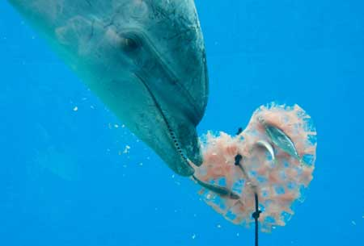
Dolphins are active predators and carnivores. A dolphin's diet includes a wide variety of fish, squids, and crustaceans such as shrimps. The foods available to a dolphin varies depending on its geographic location.
Adult bottlenose dolphins eat approximately 4% to 5% of their body weight in food per day. A nursing mother's dietary daily intake is considerably higher(about 8%). A dolphin's stomach is compartmentalized
for rapid digestion. It can also function as a crop when food is taken opportunistically.
Dolphins’ eating habits are flexible, and they are adaptable to the dolphin's particular habitat and available food resources. Dolphins do not chew their food.
Usually they swallow whole fish by the head first, so the spines of the fish won't catch in their throats. They break larger fish by shaking them or rubbing them on the ocean floor.
Hunting strategies are varied and diverse. Bottlenose dolphins often cooperate when in hunting and catching fish, but they also feed on individual, no schooling fishes. To hunt larger fish, a bottlenose
dolphin may use its tail flukes to kick a fish out of the water, and then retrieve the stunned prey. Bottlenose dolphins often feed in association with fishing operations.
Back
Population
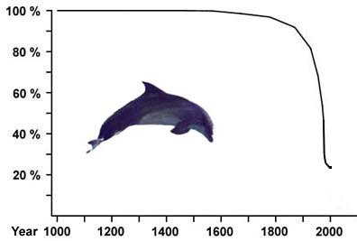
It is difficult to estimate population numbers since there are many different species spanning a large geographic area. However population of dolphins has decreased in the past few years because of various threats.
Back
Range

The above map shows the world wide range of dolphins
Back
Habitat
Dolphins inhabit almost all the major waters of the world but they usually avoid living in extreme cold waters such as North and South Poles; however, a few types such as orcas, do live there.
Some species including Hector’s dolphins fancy living in shallow waters nearer to the shore. Spinner dolphins are generally found in the middle of the ocean. They cannot breathe into the water and they must show
themselves to the surface for air. Nevertheless, dolphins would not dive more than 200 meters into the ocean.
Indo-Pacific humpback dolphins are generally found in the waters of the Sundarbans mangrove. Amazon River dolphins usually dwell in the Bita River in Columbia. While Hector’s dolphins live in New Zealand,
bottlenose dolphins are the residents to the west and south Scotland. Of all dolphins, four species resides only in river waters; Amazon River dolphin or boto; the Indus dolphin, baiji or Chinese river dolphin;
and the Ganges dolphin. Dolphins fancy feeding in habitats where prey densities are high and the water quality is good. Irrawaddy dolphins are believed to be declining as they are limited to estuarine and near-shore
habitats. They have become disappeared from most of the major habitats of the world.Two native dolphins inhabiting South America—tucuxi and boto—remain abundant and widespread, but the excessive human intervention continues to thwart dolphin’s habitats.
Back
Behavior
Dolphins are well known for their ability and playful behavior, making them a favorite of wildlife watchers. Many species will leap out of the water, spy-hop (rise vertically out of the water to view their surroundings) and follow ships, often
synchronizing their movements with one another. Scientists believe that dolphins conserve energy by swimming alongside ships, a practice known as bow-riding.Dolphins live in social groups of five to several hundred. They use echolocation to find prey
and often hunt together by surrounding a school of fish, trapping them and taking turns swimming through the school and catching fish. Dolphins will also follow seabirds, other whales and fishing boats to feed opportunistically on the fish they scare up or discard.
Back
Size
The familiar bottlenose dolphin is around 8 feet (2.5m) long and weighs between 440-660 lbs (200-300kg).
Because the forty species of dolphins are so diverse, they range in size. The smallest of the dolphin species, Maui's Dolphin, is around 4 feet (1.2m) long and weighs around 90 lbs (40 kg). The largest dolphin species is the orca, or killer whale. Male orcas grow
to about 25 feet in length and weigh about 19,000 pounds.
Back
Parts of a dolphin
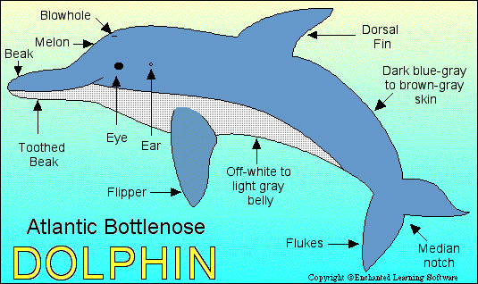
Identify the parts of a dolphin
Back
Varieties
There are 36 species of dolphins found in the world.There are 32 marine dolphins, and 4 river dolphins.Some of them are,
- Bottlenose Dolphins
- Spinner Dolphin
- Striped Dolphin
- Chinese White Dolphin
- Atlantic Spotted Dolphin
- Clymene Dolphin
- Commerson's Dolphin
- Common Dolphin
- Dusky Dolphin
- Fraser's Dolphin
- Hector's Dolphin
- Indo Pacific Bottlenose Dolphin
- Pacific White Sided Dolphin
- Pantropical Spotted Dolphin
- Risso's Dolphin
- Rough Toothed Dolphin
- Irrawaddy Dolphin
Back
Lifespan
Most dolphins live long lives. The bottlenose dolphin can live over 40 years, and the orca can live to be 70 or 80!
Back
Reproduction
Mating Season: Throughout the year, though in some areas there is a peak in spring and fall.
Gestation: 9-17 months depending on the species. When it is time to give birth, the female will distance herself from the pod, often going near the surface of the water.
Number of offspring: Usually one calf; twins are rare.
As soon as the calf is born, the mother must quickly take it to the surface so it can take its first breath. The calf will nurse from 11 months to 2 years, and after it is done nursing it will still stay with its mother until it is between 3 and 8 years old.
Back
Threats
There are a few predators of dolphins apart from humans. Some of the potential predators include dusky shark, tiger shark, great white shark, and bull shark. Killer whale is another noteworthy predator that occasionally hunts dolphins. As for the diseases,
these animals are too much susceptible and are often found to be infected with parasites. Dolphin facts about its threats states that the population of these animals is overwhelmingly affected by the human hunting in some river waters. Some of these waters are Ganges,
Yangtze River, and Amazon. Waste materials such as plastics, agricultural pollutants and other hazardous stuff result in several health problems of dolphins. These things are often left in water when there is a collision of boats. Similarly, oil spilling also leaves an
overwhelming negative effect on the dolphins’ health.
Back
Gallery
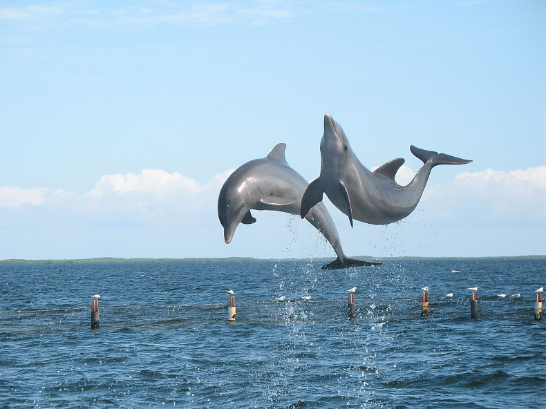
Dolphins really enjoy themselves by jumping in and out of water which amuses people too.
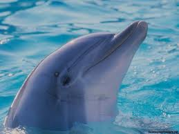
A cute looking dophin who has come out from water
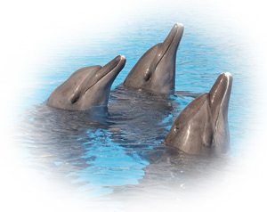
Come to cancun and enjoy swimming with dolphins
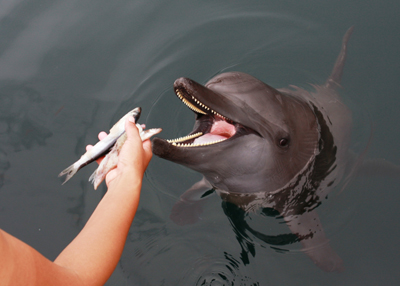
Giving food to a tame dolphin
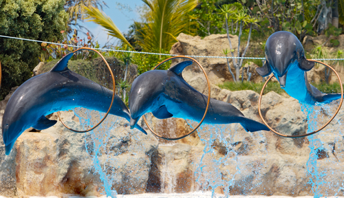
Trained dolphins performing in a pool
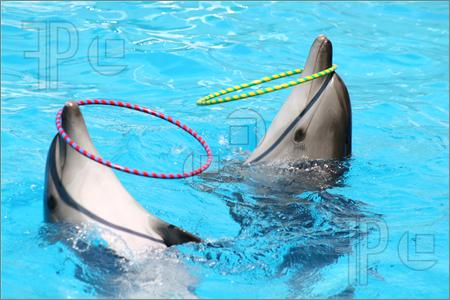
Dolphins play with rings
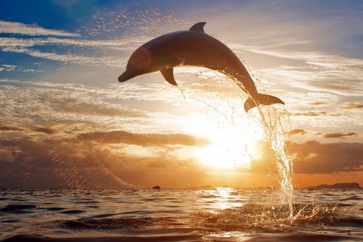
Dolphin jumping at sunset
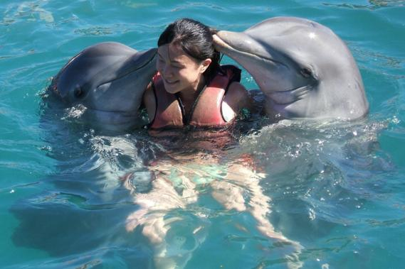
Dolphins are very friendly with humans if they are not harmed
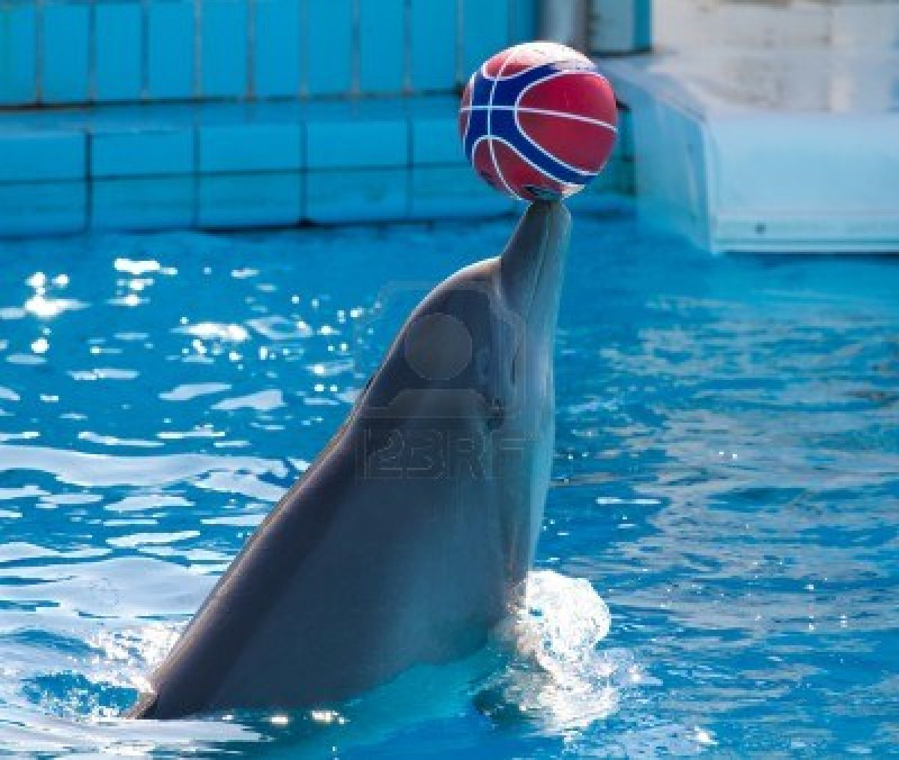
Dolphins love to roll balls on its mouth
Back
nothing